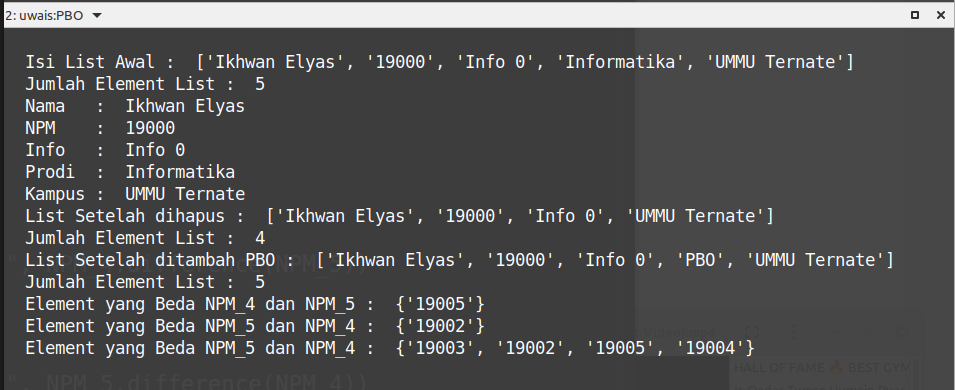

Kuliah PBO Info 4 dan 5
PERTEMUAN TUJUH 09 - UTS :
| Status | : Online |
| Waktu | : 07/06/2021 |
| Tema | : Pertemuan 09 PBO - UTS |
UTS OnLine
-
Lengkapi Script dibawah sehingga jika dijalankan dapat menghasilkan output sebagaimana terlihat pada gambar pada point no 2
#---------------------------- # Informatika UMMU Ternate # MK Praktikum PBO - UTS # --------------------------- # Nama : <ISI NAMA ANDA> # NPM : <ISI NPM ANDA> # INFO : <ISI INFO> #---------------------------- # Data List data1 = ["Ikhwan Elyas","19000","Info 0","Informatika","UMMU Ternate"] # Cetak List "data1" per Element # Hapus "Informatika" dari "data_1" # Tambah Data "PBO" ke List # Data SET NPM_4={"19003","19004","19005"} NPM_5={"19002","19003","19004"} # Cetak Elemen NPM_4 yang beda dari NPM_5 # Cetak Elemen NPM_5 yang beda dari NPM_4 # Cetak Elemen NPM_4 Gabung NPM_5 -
Lengkapi Script diatas sehingga menghasilkan OUTPOT seperti gambar dibawah :

-
Simpan file script nya dengan nama
Praktikum_PBO_UTS_NPM.py(ubah NPM menjadi NPM anda, contoh :Praktikum_PBO_UTS_19001.py). -
Jika Telah Selesai, Silahkan kirim script hasil UTS nya ke folder
Box_19000(menyesuaikan NPM) pada akundropboxanda masing-masing !. -
Hasil UTS Sudah Harus Terkumpul paling lambat 08/06/2021.
-
Jika Kurang Paham atau ada yang kurang jelas silahkan bertanya langsung lewat WA langsung atau di Grup PBO WA…
…..
PERTEMUAN TUJUH 07 :
| Status | : Online |
| Waktu | : 31/05/2021 |
| Tema | : Pertemuan 7 PBO - LIST, TUPLE DAN SET |
Kerjakan praktikum bersama teman2 lebih bagus sehingga bisa bertanya atau berdiskusi materi atau bagian yang tidak dipahami ke teman belajarnya !.
Tugas Pengganti PERTEMUAN KE-7
-
Silahkan Baca Materi di
MODULdan KERJAKAN Praktikum IV dengan TEMALIST, TUPLE DAN SETyang ada diMODUL -
Tulis kembali code yang terdapat di modul dan simpan sesuai dengan nama yang ada di modul, (contoh :
Latihan_4.1.list1.pydan seterusnya) - (usahakan nama file jangan mengandung SPASI). -
Setelah code ditulis, silahkan jalankan untuk di test, lakukan untuk semua dari code
Latihan_4.1.list1.pysampai codeLatihan_4.4.set.py. -
Setelah Melakukan Test dan berhasil, silahkan kirim ke folder
Box_19000(menyesuaikan NPM) pada akundropboxanda masing-masing !. -
Usahakan Sudah Terkumpul Sebelum Pertemuan Akan datang (paling lambat 05/06/2021).
-
Jika Kurang Paham atau ada yang kurang jelas silahkan bertanya langsung lewat WA langsung atau di Grup PBO WA…
….:)
PERTEMUAN EMPAT 04 :
| Status | : Online |
| Waktu | : 05/04/2021 |
| Tema | : Praktikum 4 PBO - Variable/Variabel |
Tugas Pengganti Pertemuan ke-4
Silahkan Baca Referensi di link berikut: referensi, cari tema tentang Variable atau Variabel dan buat sebuah contoh file script python tentang Variable/Variabel, Setelah selesai coba jalankan dan pastikan scriptnya tidak error, setelah itu silahkan kirim/kumpul file script yang sudah anda buat ke dropbox-nya masing2…!
Yang Perlu DiPERHATIKAN !
-
Mahasiswa diharapkan membaca
referensidan buat FILE SCRIPT tentang contoh VARIABLE/VARIABEL dalam Bahasa Pemrograman Python !. -
Kerjakan praktikum mandiri bersama teman2 lebih bagus sehingga bisa bertanya bagian yang tidak dipahami ke teman belajarnya,
-
Setelah praktikum mandiri usahakan sampai hasil testingnya tidak error, setelah itu upload/kirim ke folder
Box_19000(menyesuaikan NPM) pada akundropboxanda masing-masing !. -
Beri Nama File Scriptnya dengan nama file:
praktikum4_npm_variable.py(contoh :praktikum4_19001_variabel.py) -
Usahakan Sudah Terkumpul Sebelum Pertemuan Akan datang (paling lambat 11/04/2021).
-
Jika Kurang Paham atau ada yang kurang jelas silahkan bertanya langsung lewat WA person atau di Grup…
PERTEMUAN TIGA 03 :
| Status | : Offline |
| Waktu | : 22/03/2021 |
| Tema | : Praktikum 2 PBO |
PERTEMUAN DUA 02 :
| Status | : Offline |
| Waktu | : 15/03/2021 |
| Tema | : Praktikum 1 PBO |
PERTEMUAN PERTAMA 01 :
| Kuliah | : Offline |
| Waktu | : 08/03/2021 |
| Tema | : Arahan dan Kontrak Kuliah |
Variabel dan Persentase Penilaian :
- Absen : 40 %
- Absen Untuk Pertemuan Online dihitung berdasarkan yang mengumpulkan file praktikum
- Tugas : 40 %
- Tugas yang AKAN DINILAI adalah tugas yang dikerjakan dan dikumpulkan SESUAI DENGAN KETENTUAN, dan dikupul ke
DROPBOX - Setiap tugas akan disampaikan ketentuan apa saja yang harus dipenuhi, Usahakan untuk memenuhi semua ketentuan yang ditetapkan oleh dosen.
- Tugas yang AKAN DINILAI adalah tugas yang dikerjakan dan dikumpulkan SESUAI DENGAN KETENTUAN, dan dikupul ke
- UTS dan UAS : 20 % (UTS 10% dan UAS 10%)
Yang Harus Dipersiapkan :
- Semua Mahasiswa diminta membuat akun di
dropbox(bagi yang belum memiliki akun), yang akan digunakan sebagai wadah mengumpulkan tugas anda, (gunakan email anda sebagai username agar lebih mudah) - Segera kumpul username dropbox, Nama dan NPM melalui WA grup mata kuliah PBO
- Segera Install Python 3.x di komputernya masing2, bisa download di python.org bagi yang belum punya,
- Bantu Infokan dan share ke Teman2 bagi yang lebih dulu membaca infomasi yang dibagi di sini,
- Untuk Mahasiswa yang belum paham agar bertanya, bisa ke grup WA ataupun ke teman2 anda yang lain, dan bagi Teman2 Mahasiswa yang sudah paham agar membantu teman2 yang belum paham.
Waktu Pengumpulan UserName dropbox :
- Diharapkan untuk semua mahasiswa sudah melaporkan/mengumpulkan akun dropboxnya Paling Lambat pada hari
Senin 12/10/2020
INFO Kuliah :
- Infomasi Seputar MK PBO akan disampaikan melalui media :
- Melalui WA (WhatsApp) di grup PBO Info 4 dan Info 5, atau melalui KETING (Ketua Tingkat), dan
- Page infoummu.github.io
- Untuk semua Mahasiswa diharapkan untuk pantau dan ikuti terus informasi dari Kedua media tersebut,
- Modul akan disharing saat post per pertemuan (Modul Sementara Baru Tersedia Untuk MK PBO)
- Referensi Materi Extra (Materi Tambahan) dapat dilihat di link berikut : Extra Modul.
By : Ikhwan